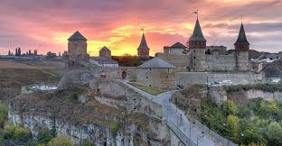

Кам'янець подільський місто в історичному Поділлі на південному заході України, політико-адміністративний, економіко-діловий, релігійний та культурний центр Кам'янець-Подільського району хмельницької області, за 100 кілометрів на південь від Хмельницкого та за 85 кілометрів на північний схід від Чернівців
Кам'янець-Подільський — старовинне руське місто-фортеця на перетині торгових шляхів. Через місто в глибокому скельному каньйоні протікає річка Смотрич, русло якої утворює петлю з вузьким перешийком. На території півострова, утвореного каньйоном, розташоване Старе місто, а підходи до перешийку захищені Старим замком. Кам'янець-Подільський входив до складу Київської Русі і Великого Князівства Литовського, в середні віки був великим ремісничим і торговим пунктом, а також одним з центрів вірменської діаспори на Україні. У 1672 році захоплений і зруйнований Османською імперією; в 1793 році, після другого поділу Речі Посполитої, разом з усією правобережною Україною відійшов до Російської імперії. У Старому місті частково збереглася забудова, яка відображає різні культурні періоди в історії Кам'янця
террасах, биоразнообразие флоры и фауны издавна привлекали внимание ученых. Около ста лет назад ими был поставлен вопрос об образовании заповедного объекта в этом регионе.